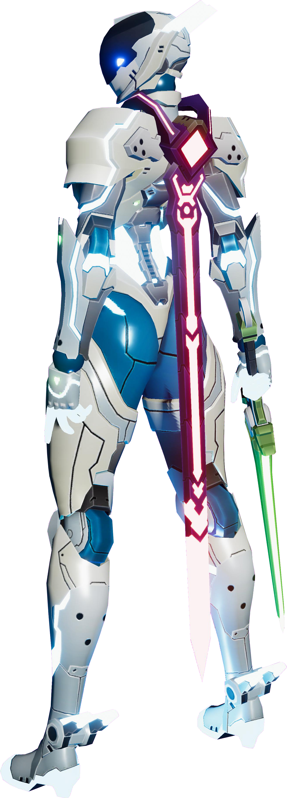

바이러스 침입에 맞서는 핵 앤 슬래시 액션!
게임 소개
세르케는 바이러스 침입에 대항하여 싸우는 핵 앤 슬래시 액션 게임입니다. 플레이어는 인공지능 정화프로그렘인 '세르케'가 되어, 악의적인 바이러스에 감염된 적들을 정화하고 가상 세계를 구원해야 합니다.
5종류의 독특한 무기 (검, 소총, 할버드, 중화기, 건틀릿 등)를 사용하여 끊임없이 몰려오는 적들을 시원하게 섬멸하고, 다이나믹한 전투 시스템으로 전략적인 액션을 펼치십시오. 미래 지향적인 SF 배경과 압도적인 핵 앤 슬래시 액션이 당신을 기다립니다.
무기 소개
시아네아
시아네아는 기동성이 뛰어난 한손검 무기입니다.
모든 능력치가 준수하여 밸런스가 좋은 무기입니다.
스피니퍼
스피니퍼는 라이플을 바탕으로 드론, 터렛을 소환하여 끊임없이 이동하며 싸웁니다.
거리를 두고 일방적으로 적을 공격할 수 있는 무기입니다.
레드 클로우
레드 클로우는 할버드 형태의 대형 근접 무기입니다.
강력한 데미지로 일격에 적을 분쇄하세요.
임페라토르
임페라토르는 화력 장비를 사용하는 강력한 원거리 무기입니다.
고화력 장비인 샷건, 게틀링, 레이저포, 유탄을 사용해 적을 섬멸하세요.
데스 스토커
데스 스토커는 가까이 접근하여 싸우는 격투 무기입니다.
킥과 펀치로 공격하기 때문에 속도감 있는 전투를 할 수 있습니다.